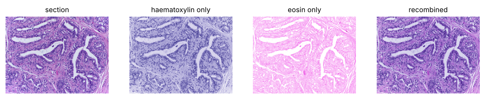
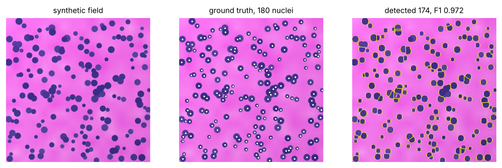
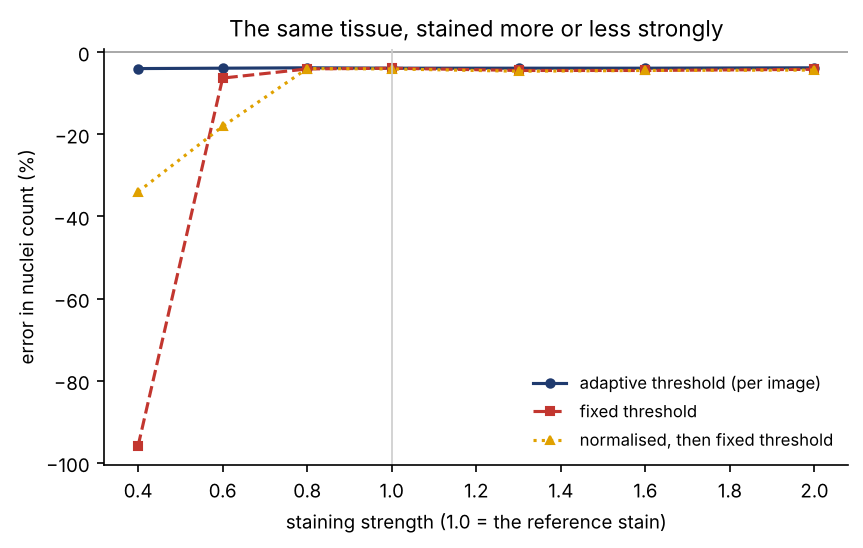
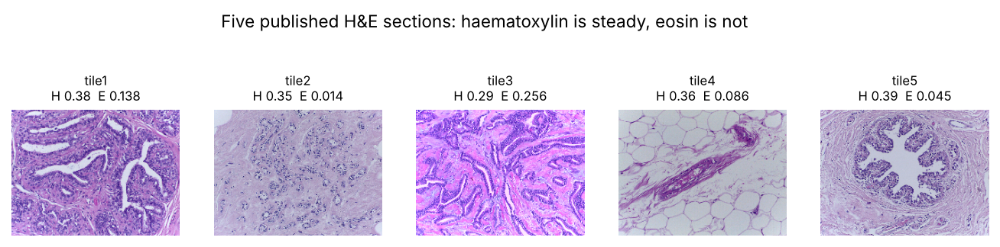
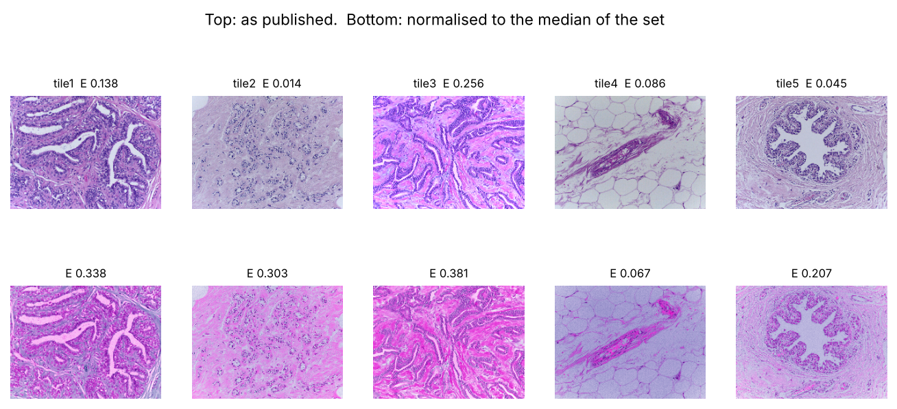

At a glance
Every number on this page is read from results.js, written by the pipeline run that also made the figures.
Separating the two dyes
A stained section absorbs light, so the quantity that adds up is optical density, not brightness. Writing
OD = -log10(I / I₀) makes the two dyes additive, and each one has its own colour direction, so recovering how much of each
dye sits in a pixel is a least-squares problem (Ruifrok & Johnston, 2001). It is implemented here from the equations rather than
called from a library, which is why it can be checked against one.

Counting nuclei against a known answer
A real section does not come with a list of where its nuclei are, so accuracy cannot be measured on one. Instead the image is built forwards: nuclei of known position and size are placed, the two stains are applied through the same absorption law the analysis assumes, and the result is degraded with uneven illumination, read noise and 8-bit quantisation. The detector is plain on purpose — smooth, threshold, split touching objects by watershed — because every step is then scored rather than trusted. Parameters were chosen on three development fields and the numbers below come from different ones.

The same tissue, stained more or less strongly
Here the tissue is held fixed and only the amount of dye changes, from 0.4× to 2.0× the reference stain — the computational version of leaving the section in the haematoxylin for a shorter or longer time. Three rules are compared: a threshold recomputed for every image, one threshold fixed once at the reference staining, and that same fixed threshold applied after the image has been re-stained to a common appearance.

Five real sections
Five published H&E tiles, stained in different laboratories. Haematoxylin is reproducible across them; eosin is not. Because the five are different tissues — ducts, stroma, fat — the differences in nuclei count between them are mostly biology, so the useful comparison here is the staining measurement itself, not the counts.

Can normalisation make them comparable?

Checks built in
Limits
- The ground truth is synthetic. It is built from the same absorption law the analysis assumes, so it tests the detector and the arithmetic, not whether real nuclei look like the model's nuclei.
- The five real tiles are crops of a published figure, so a nucleus is only a few pixels across. Counts from them are made at a fixed working scale and are comparable with each other, not with a full-resolution slide.
- Those five tiles are different tissues from different laboratories. Staining and biology vary together, so they cannot separate the two; that is what the synthetic experiment is for.
- Stain normalisation estimates the dye vectors from the image. On a section with little stainable tissue — the adipose tile here — that estimate is poor, and normalising makes the measurement worse rather than better.
- Counting nuclei is not diagnosis. Nothing here identifies a cell type or a disease.
How to run it
The whole thing rebuilds from one command, and the tests run without any network access.
pip install -r requirements.txt python run_all.py # fetches the tiles, runs every step, writes docs/ python tests/run_tests.py
Real images: five H&E tiles from the StainTools repository (MIT licence). Reference stain vectors: Ruifrok & Johnston (2001). Stain-vector estimation and normalisation follow Macenko et al. (2009). Phase 1 was a departmental workshop at the DS Kothari Centre, Miranda House, University of Delhi; the poster and its authors are here.